Рассмотрим основные приемы работы с отчетами в решении «1С:CRM». Отчеты открываются из каждого раздела из группы «Отчеты». Все отчеты основаны на едином механизме формирования и настройки, и имеют общую универсальную форму.
Варианты отчетов
Вариант отчета - это настройка отчета, которая содержит описание группировок, отборов, условных оформлений и т.п.
Разработчик на этапе проектирования системы задает один или несколько вариантов отчета, пользователь может переключаться между ними. В случае, если представленных вариантов недостаточно, можно сохранить свой собственный вариант отчета, либо изменить уже имеющийся. Для этого в меню «Варианты отчета» находится команда «Сохранить вариант отчета».
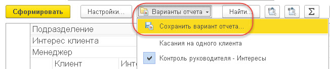
Для создания нового варианта отчета необходимо выбрать меню «Еще» - «Прочее» - «Изменить вариант отчета».
По команде «Изменить вариант отчета» открываются настройки текущего варианта:. Далее представлено описание на примере отчета по анализу клиентской базы по ответственным менеджерам.
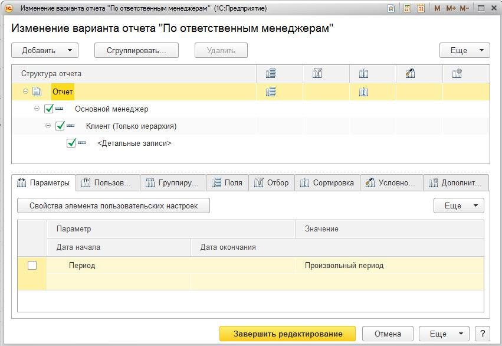
В данной форме можно внести необходимые изменения и применить их. Например, добавить группируемые поля, задать отборы, указать цветовую раскраску отчета, задать вид диаграммы и т.д.
Например, к текущему результату отчета мы можем добавить еще одну таблицу, в которой будет видно распределение клиентов по Регионам и Отраслям. Для этого в командной панели через меню «Добавить» добавляем новые группировки «Бизнес регион» и подчиненную «Основная отрасль»:
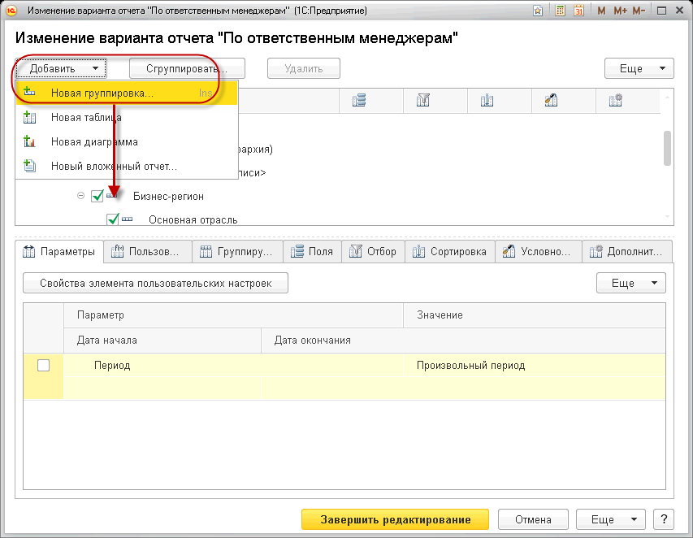
А также добавим новую диаграмму и укажем для нее в качестве точек поле «Основная отрасль» и на закладке «Дополнительные настройки» тип «Круговая объемная»:
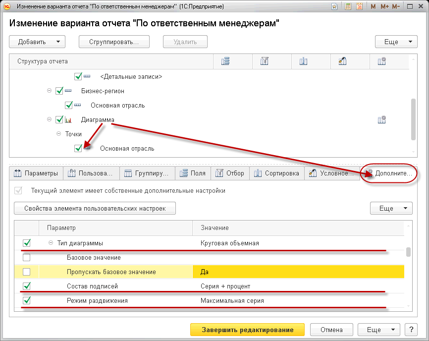
Так же включим Состав подписей со значением «Серия + процент» и отключим показ Легенды. Для большей наглядности диаграммы включим Режим раздвижения в значении «Максимальная серия». Поскольку мы задали группировки в самом варианте отчета, надо отключить группировки в настройках отчета. Для этого в меню «Еще» - «Прочие» откроем «Все настройки» и там отключим значения группировок:
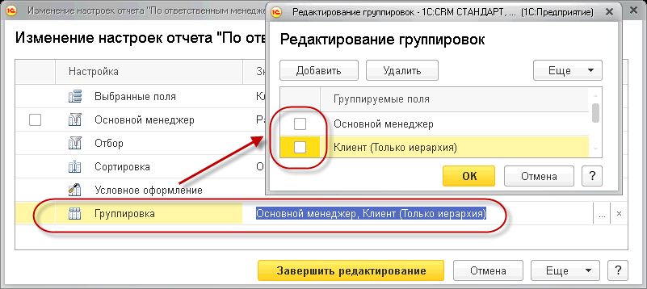
В результате под основной таблицей отчета мы увидим новые данные для анализа:
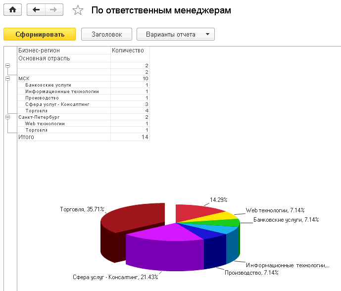
Все изменения затем можно сохранить как новый вариант отчета при помощи команды «Сохранить вариант…». Так же можно указать доступность данного отчета:
- Доступен только для автора
- Доступен всем пользователям
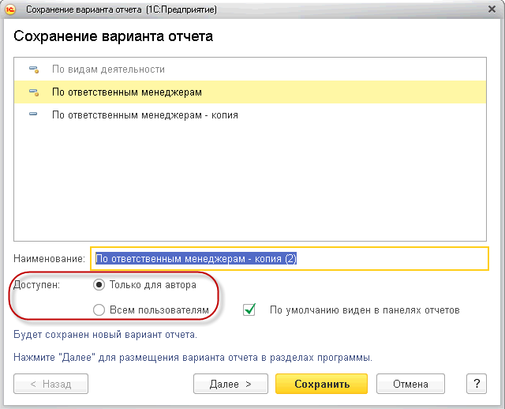
В меню «Еще» - можно вернуться к стандартным настройкам отчета.
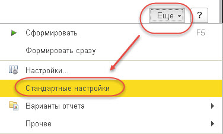
В любой момент можно вернуться к стандартным настройкам варианта отчета. Для этого необходимо в меню «Еще» - «Прочее» выбрать команду «Изменить вариант отчета», в нем в меню «Еще» выбираем команду «Стандартные настройки».
Удаление вариантов отчетов
Для удаления варианта отчета в меню «Еще» - «Прочее» выбираем «Выбрать вариант отчета», встаем на нужный нам вариант, кликаем правой кнопкой мыши - в открывшемся контекстном меню, выбираем команду «Пометить на удаление». После запуска обработки «Удаление помеченных объектов» данный вариант будет удален.
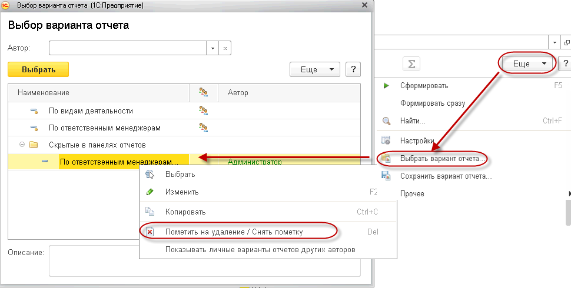
Настройки отчетов
Можно изменять настройки текущего варианта при помощи команды «Настройки».
Например, добавим на закладке «Поля» колонку «Бизнес-регион»:
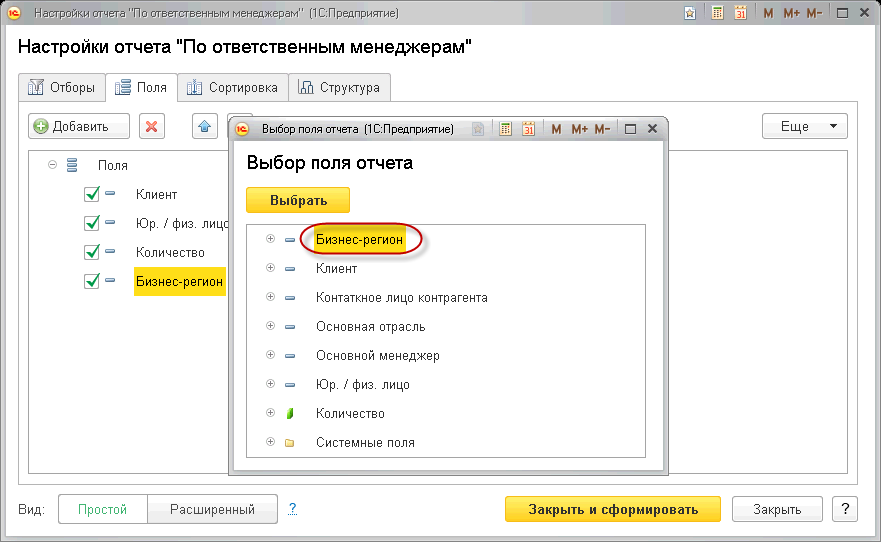
В итоге в отчете появится новая колонка «Бизнес-регион», где будут данные по каждому клиенту (если они указаны в его карточке):
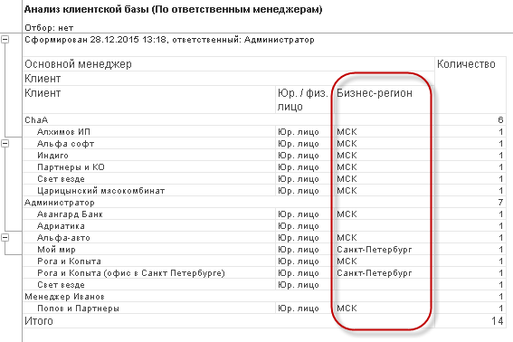
Помимо добавления полей, можно задать группировки, упорядочивание, изменить оформление отчета и многие другое.
Что особенно важно – все эти действия производятся в режиме Предприятия и не требуют программирования. Достаточно лишь знать основы настройки отчетов.
Можно сохранять произвольное количество настроек для каждого варианта отчета и потом переключаться между ними при помощи команд «Сохранить настройки», «Выбрать настройки» и «Стандартные настройки».
Вынос полей отбора на форму
Бывает удобно вынести на форму отчета часто используемые поля отборов, чтобы не заходить постоянно в настройки.
Вынесем отбор по Региону на форму отчета. Для этого открываем в меню «Еще» команда «Настройки» и на закладке «Отборы» - вид Расширенный, добавляем отбор «Бизнес - регион». Тут же можно указать – будет ли отбор активен при открытии отчета, какой вид сравнения у него будет и даже задать отбор по умолчанию. Чтобы поле отбора отобразилось на форме, у него должен быть указан режим «В шапке отчета». Для этого необходимо кликнуть левой кнопкой мыши по колонке со звездочкой и выбрать вариант «В шапке отчета».
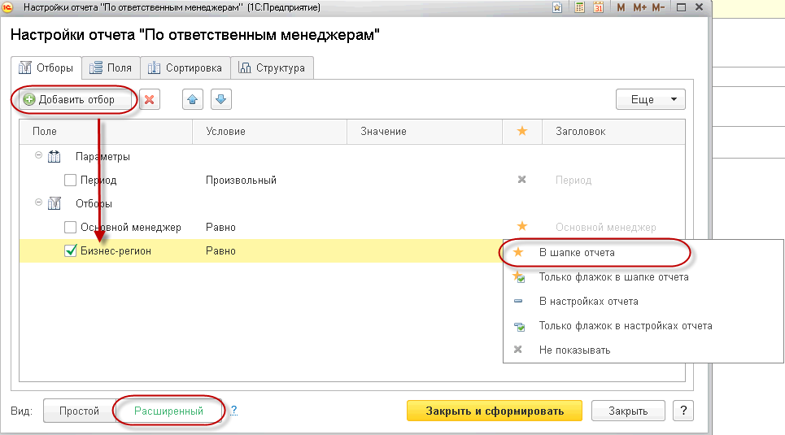
После этого поле отбора появится в форме отчета.
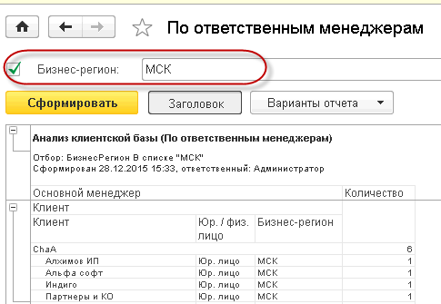